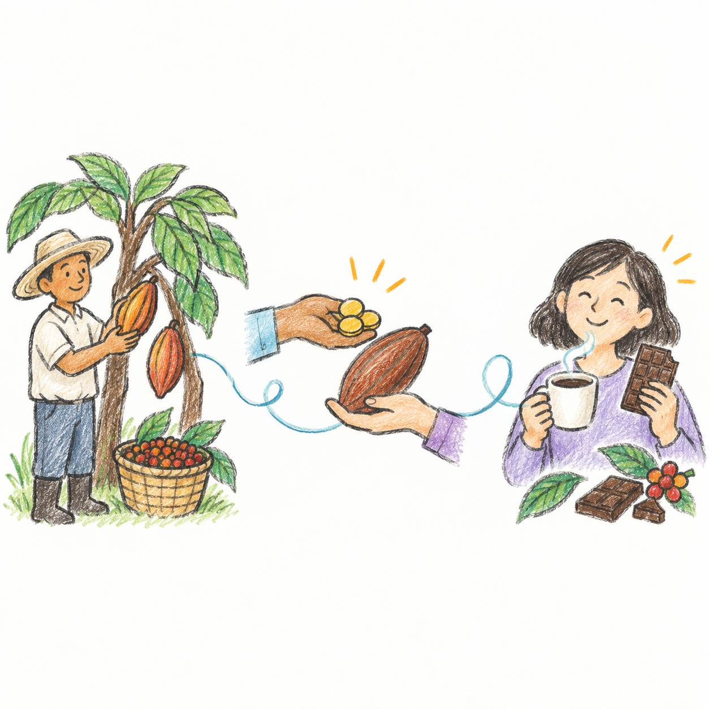

주제 낱말 탐색
1 / 10
이 글에 나올 것 같은 낱말일까요?
그림을 보고 빠르게 골라요.
공정 무역
낱말을 살펴보고 주제와 관련 있는지 판단해 보세요.
낱말 예측 활동을 시작했어요.
1 · 예측하기

그림을 보고 빠르게 골라요.
2 · 꼼꼼하게 읽기
우리가 먹는 초콜릿과 커피는 먼 나라에서 재배한 카카오와 커피 원두로 만듭니다. 는 씨를 심고 열매를 기르며 수확하지만, 여러 단계를 거치면 판매 가격 중 생산자에게 돌아가는 몫이 적을 수 있습니다.
수입이 너무 적거나 하면 생산자 가족은 생활비와 교육비를 마련하기 어렵습니다. 일부 농장에서는 어린이가 학교에 가지 못하고 위험한 일을 돕는 문제도 생깁니다. 값싼 제품 뒤에 이런 노동 문제가 숨어 있을 수 있습니다.
은 구매자가 생산자에게 일한 만큼 를 지불하고, 생산자가 안전한 환경에서 일하도록 돕는 거래 방식이자 운동입니다. 강제로 일하게 하거나 어린이 노동을 이용하지 않고, 과 물을 함부로 해치지 않는 생산 기준도 중요하게 봅니다.
기준을 지킨 생산물에는 가 붙기도 합니다. 소비자는 표시와 생산 과정을 확인해 물건을 고를 수 있고, 생산자는 비교적 안정적으로 판매할 기회를 얻습니다. 생산자 단체가 구매자와 하면 중간 단계를 줄이는 데 도움이 될 수 있습니다.
공정 무역 제품을 고른다고 해서 무조건 비싼 물건을 많이 사야 하는 것은 아닙니다. 필요한 만큼 사고, 누가 어떤 환경에서 만들었는지 살펴보며, 믿을 수 있는 정보를 확인하는 것이 의 시작입니다. 작은 선택이 생산자와 소비자를 더 공정하게 연결할 수 있습니다.
3 · 단어 스파이
4 · 공정 거래 연결
5 · 검산하기
6 · 여러 가지 전이
7 · 확인 기록
나의 확인 기록
한 가지를 고르고, 필요하면 한 줄을 덧붙여요.
누른 낱말을 단어장에 담았어요.
본문에서 확인한 낱말로 매칭게임을 할 수 있어요.
본문의 어려운 낱말을 누르면 여기에 모여요.
낱말을 2개 이상 모으면 시작할 수 있어요.